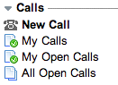

Service Desk Call
| |
Note: This article applies to Fuji and earlier releases. For more current information, see Service Desk Calls at http://docs.servicenow.com
The ServiceNow Wiki is no longer being updated. Visit http://docs.servicenow.com for the latest product documentation. |
Contents
1 Overview
Service desk call allows ITIL users to create a call record and quickly capture basic information from a customer contact, before deciding whether the call is an incident, a problem, a change, or a service catalog request. Service desk personnel can more quickly process customer calls by retaining and reusing the information captured during the call.
At the end of the call, the ITIL user can decide to:
- Transfer the call record to an incident, problem, change, or service catalog request.
- Record the call as another type of contact, such as a wrong number.
Service desk call is available starting with the Dublin release. It supersedes Best Practice - New Call Wizard and the New Ticket module. For more information, see Upgrading to Dublin.
2 Service Desk Call and Domain Separated Systems
Saving a call record may create two records: a service desk call record and a transferred record. For systems using domain separation, these two records may be stored in different domains.
The service desk call record is saved in the ITIL user's domain. This domain is determined as follows:
- Use the ITIL user's domain if the ITIL user has a domain.
- Otherwise, use the default domain.
Any transferred record is saved in the caller's domain. This domain is determined as follows:
- Use the caller's domain if the caller has a domain.
- Otherwise, use the default domain.
3 Roles
| Role Title [Name] | Description |
|---|---|
| ITIL user [itil] | May read, create and edit an existing call. May not delete any calls already created, and may not edit a call after it is transferred. |
4 Menus and Modules
|  | Service desk call adds these modules to the Service Desk application:
|
{kind=link}
5 Activating Service Desk Call
Administrators can activate the Service Desk Call plugin.
| Click the plus to expand instructions for activating a plugin. |
|---|
|
If you have the admin role, use the following steps to activate the plugin.
|
If Service Desk Call is not already active, activating the Domain Support - MSP Extensions plugin on a Dublin instance automatically activates the Service Desk Call plugin.
5.1 Upgrading to Dublin
When upgrading to Dublin from a previous release that has already activated the Domain Support - MSP Extensions plugin, the Service Desk Call plugin is not automatically activated.
To activate the Service Desk Call plugin in this situation:
- Remove the New Ticket module by editing the application menu.
- Activate the Service Desk Call plugin manually, through System Definition > Plugins..